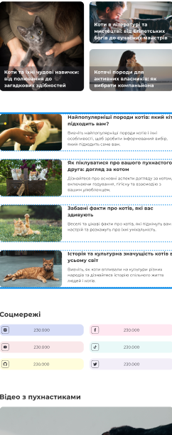
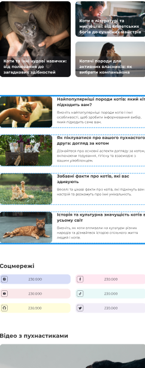

Research and Inspiration
Mental Health Benefits: With research indicating that cats, can have positive effects on human mental health, a website like this can promote the therapeutic benefits of owning a cat.
Raising Awareness: Many people are unaware of the importance of proper care for cats, including the need for regular vet visits, understanding breed-specific behaviors, and how lifestyle can affect their health.


 
